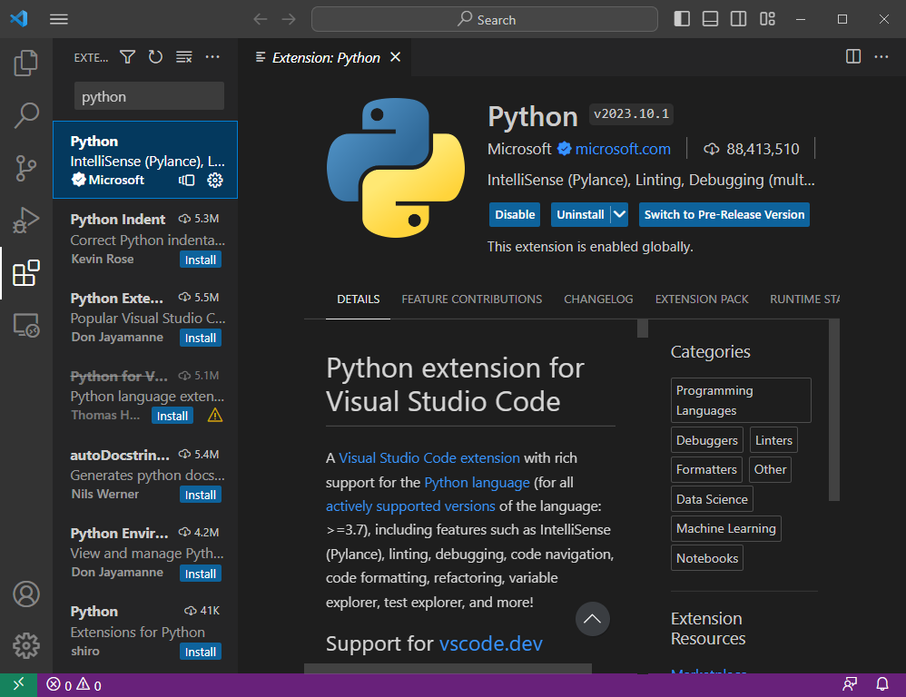
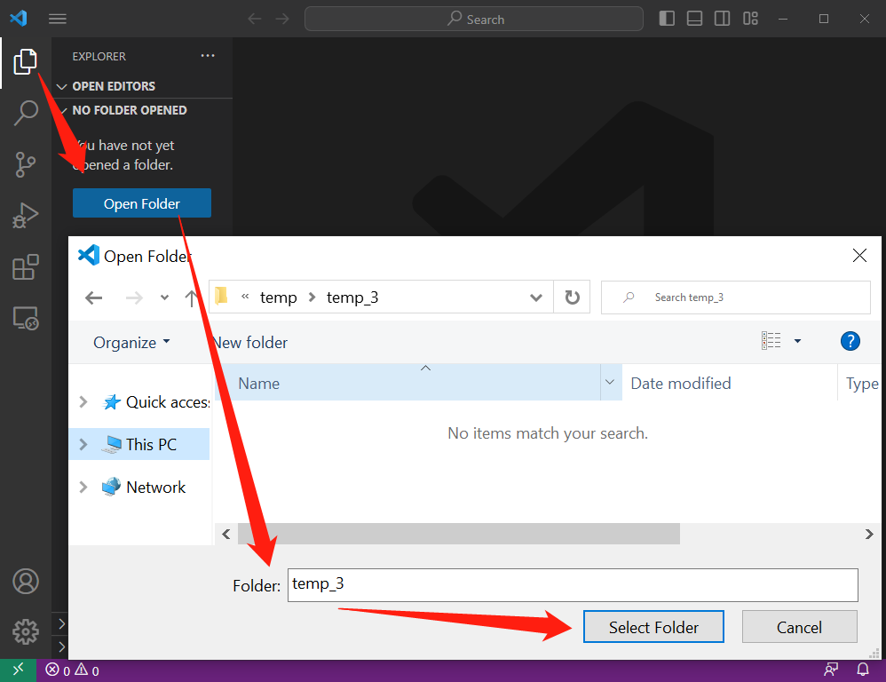
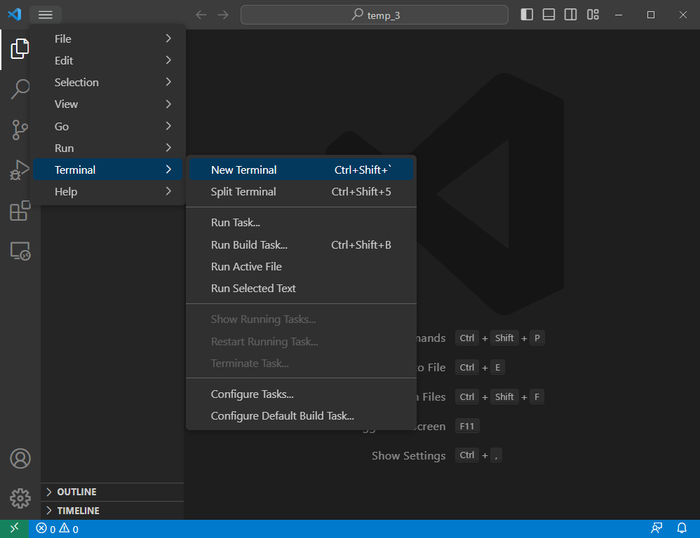
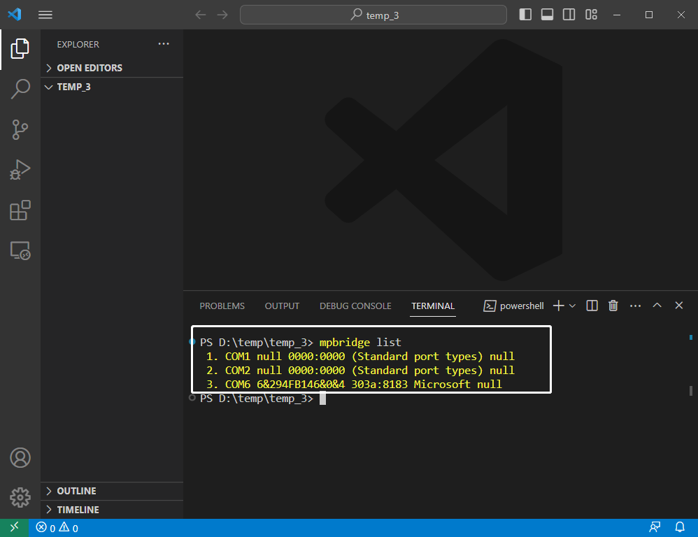
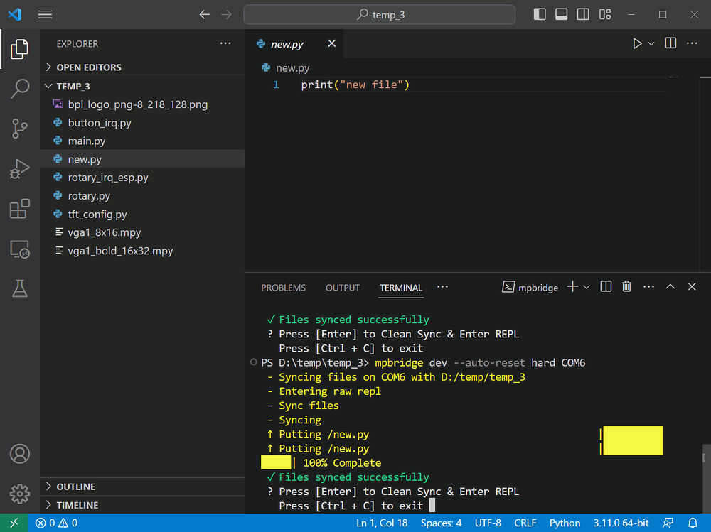

VScode + mpbridge工具使用方法
Python扩展
在扩展项中搜索python，安装Python扩展支持。

打开文件夹
在文件资源管理器项中点击Open Folder，打开一个文件夹，或新建一个空白文件夹。
这里尤其建议新手先从一个空白文件夹开始上手。

打开终端
点击Terminal项，点击New Terminal项，将会打开一个新的终端窗口，通常出现在下方框体中。

mpbridge列出串行端口编号
首先应确保你的MicroPython开发板已与你的计算机建立串行数据连接。
在终端中输入以下命令并点击回车键，将列出计算机上所有串行端口编号。
mpbridge list

如果你的计算机中仅有连接一个串行设备，且它就是你的MicroPython开发板，那么这个串行端口编号就是开发板的。
如果你的计算机连接多个串行设备，你可以通过接入设备查看一次编号列表，拔出设备查看一次编号列表，来找到唯一变动的一项，这一项就是你的MicroPython开发板的串行端口编号。
mpbridge 连接开发板
在终端中输入以下命令，将末尾的串行端口编号修改为上一步所确定的编号，然后点击回车键，如果你当前打开的是一个空白文件夹的话，mpbridge工具将首先将MicroPython开发板上的文件拷贝到此文件夹内。
mpbridge dev --auto-reset hard COM6
当文件拷贝完成后，终端中将显示:
? Press [Enter] to Clean Sync & Enter REPL
Press [Ctrl + C] to exit
想要进入REPL则再次单击回车键，想要退出工具则使用 Ctrl + C快捷键。
在进去REPL前，开发板会被硬复位一次，以便于立即查看程序结果。
如果你不希望硬复位，则使用这个命令：
mpbridge dev COM6
如果你想使用软复位，则：
mpbridge --auto-reset soft COM6

当你进入REPL后，在任何时候，你仅需使用Ctrl + X快捷键即可退出REPL。

修改或新增文件
如果你在退出REPL之前，在本地文件夹中修改了某个文件内的代码，或是增加了某个文件，mpbridge工具将自动检查变更的文件并同步到开发板上。
mpbridge dev --auto-reset hard COM6
在终端中开始运行这个命令时，也会这么做。

删除文件
mpbridge dev --auto-reset hard COM6
当这个命令完成了文件的同步后，终端中将显示:
? Press [Enter] to Clean Sync & Enter REPL
Press [Ctrl + C] to exit
如果你需要删除某个或多个文件，则先在本地文件夹内删除它，然后再点击回车键，mpbridge工具将自动执行Clean Sync，将开发板中的同名文件也删除掉，最后进入REPL。


如果你仅仅想要临时删除开发板上的文件，而需要在计算机本地保留文件，请记得提前备份文件到其他文件夹中。
mpbridge 做了什么？
mpbridge dev --auto-reset hard COM6
开始运行这个命令时，以及退出REPL后，mpbridge都将自动进行这些文件操作：
- 将存在于本地但不存在于设备中的文件推送到设备中。
- 对同时存在于本地和设备中的文件进行哈希检查，将不同的文件从本地推送到设备中。
- 将不存在于本地但存在于设备中的文件拉取到本地。
每当终端显示此提示时：
? Press [Enter] to Clean Sync & Enter REPL
Press [Ctrl + C] to exit
再次按下回车键，mpbridge都将自动进行这些文件操作：
- 将存在于本地但不存在于设备中的文件推送到设备中。
- 对同时存在于本地和设备中的文件进行哈希检查，将不同的文件从本地推送到设备中。
- 将不存在于本地但存在于设备中的文件，从设备中删除。
- 硬复位设备，进入REPL。
若是此时按下Ctrl + C快捷键，则会退出mpbridge工具。